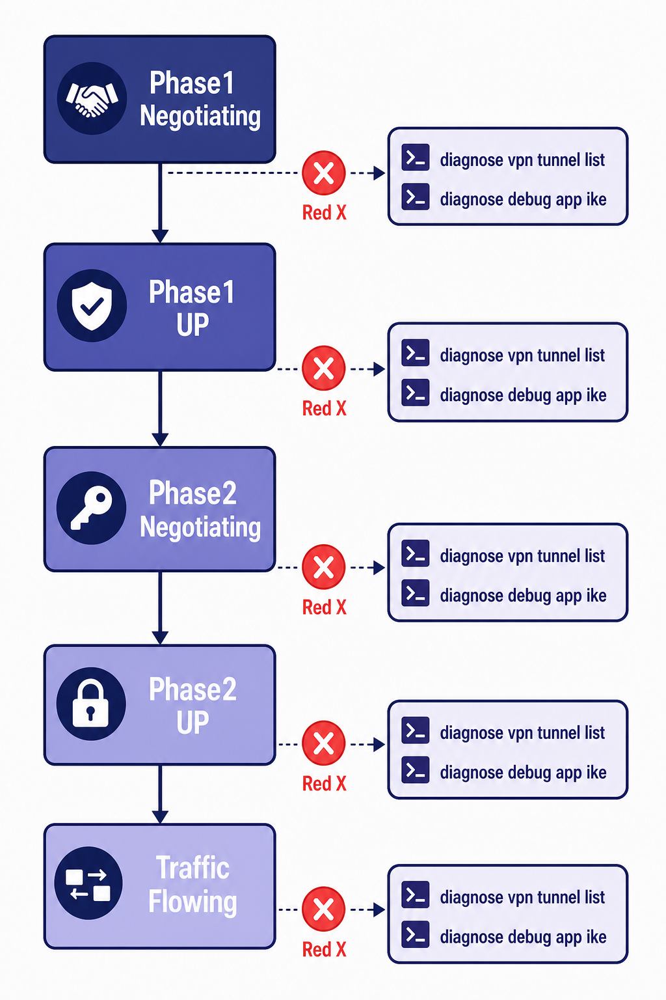

Overview
IPsec troubleshooting on FortiGate requires understanding both the state machine that governs SA establishment and the specific CLI commands that expose that state. The most dangerous failure mode in IPsec is not a tunnel that is visibly down — that is easy to detect and prioritize. The most dangerous failure mode is a tunnel that appears UP in the GUI while passing zero traffic, as the scenario above illustrates. The GUI tunnel status reflects whether an SA entry exists locally; it does not verify that the remote peer is actively honoring that SA or that traffic is actually flowing. Always verify with packet counters and diagnostic commands, not the dashboard status indicator.
FortiGate provides a layered set of diagnostic commands for IPsec. The diagnose vpn tunnel list command shows all active IPsec SAs with their current packet counters, SA indices, proxy IDs, and lifetime remaining — this is the first command to run when a tunnel appears up but traffic is not flowing. The diagnose vpn ike gateway list command shows IKE Phase 1 state. The diagnose debug application ike -1 command combined with diagnose debug enable provides real-time IKE negotiation output — this is the most powerful troubleshooting tool for Phase 1 and Phase 2 failures, showing exactly what proposals are being exchanged, where mismatches occur, and what error messages the IKE daemon generates. Packet capture (diagnose sniffer packet) on the WAN interface can confirm that ESP-encrypted packets are leaving the FortiGate, verifying that traffic is actually being encrypted and transmitted.
Systematic troubleshooting follows the IPsec state machine from outside in: first confirm the WAN path is reachable (UDP 500 and 4500, ESP protocol 50), then verify Phase 1 negotiation succeeds (IKE SA established), then verify Phase 2 negotiation succeeds (IPsec SA established), then verify traffic is matching the tunnel selector and being encrypted (packet counters incrementing), then verify traffic is arriving at the destination. Each layer has specific failure signatures in the debug output, and understanding what a proxy ID mismatch, a proposal mismatch, or an SA expiry looks like in the IKE debug stream is a core NSE7-level skill.

Flat illustration of IPsec troubleshooting state machine
Target Questions
These are the questions your Socratic session will explore. Read them before you start — they tell you what understanding to look for while reviewing the study guide.
- 1What CLI command shows the current IPsec SA state and packet counters — what key fields should you examine?
- 2What does it mean operationally when a VPN shows "UP" in the GUI but traffic is not passing?
- 3What are the 3 most common causes of IKE Phase 1 failure?
- 4What are the 3 most common causes of Phase 2 failure after Phase 1 succeeds?
- 5What does
diagnose debug application ike -1show and when would you use it? - 6What is a proxy ID mismatch and how does it appear in FortiGate debug output?
- 7How do you verify that packets are being encrypted and leaving the firewall through a specific tunnel?